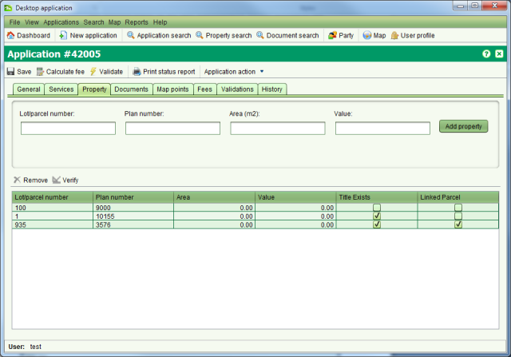

All applications that result in changes to the land register or cadastre information should reference the affected property or properties on the Property tab of Application Details. For land registration changes this will be the property being transacted upon. For survey applications, this will be the underlying property or properties that are being subdivided or amalgamated. Note that new parcels created by the plan should not be recorded here.
To verify if the property details provided by the agent match details recorded in SOLA,
use Verify tool
on the Property tab.
Verify tool
on the Property tab.
Before verifying the property, you first need to add it to the application. On the Property
tab, enter the folio reference (i.e. Lot/parcel number and Plan number) in the fields
provided and click Add property. This will add the property to the list in the bottom half of
the tab. You can then verify the property by selecting it from the list and clicking the Verify tool. To
remove a property added by mistake, select it and click the
Verify tool. To
remove a property added by mistake, select it and click the Remove tool.
Remove tool.

Application Details Property tab
If the folio reference you entered exactly matches a property in the SOLA Database, the property will be flagged as Title Exists. If the property also has a spatial definition, it will be flagged as Linked Parcel.
If the Title Exists checkbox is not checked, it may indicate the folio reference is invalid or the folio has yet to be converted from paper format. Use the Property Search screen and/or Map Find to attempt to locate the property record. If you are unsuccessful, check the paper records to determine if the property information must first be converted into SOLA before any land registration transactions can proceed.